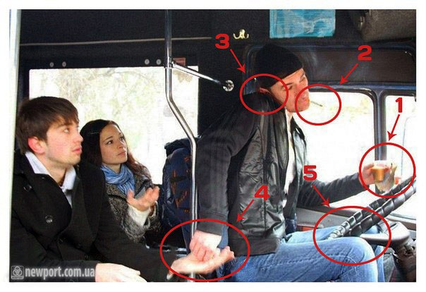
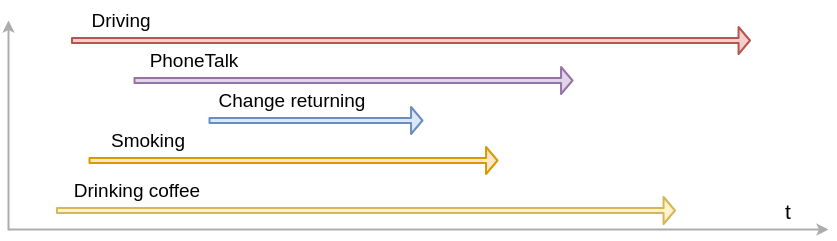

Parallel programming: multithreading and multiprocessing
Created for

Shape the concepts
Shape the concepts
Multitasking
 {kind=link}
{kind=link}
Multitasking
- Multitasking is implemented in Python by threading and multiprocessing.
- A hot topic, in the contest of rapid increase of the number of cores in contemporary microprocessors.
Von Neumann Architecture
{kind=link}
Multi Core Processor

Check CPU details
Linux:
lscpu | head -10
Windows:
Find out how many cores your processor has @support.microsoft.com
Pyhton:
import os
print('core count: ', os.cpu_count())
Preliminary
- N cores == N physical Central Processing Units(CPU) leaving in one chip.
- threads are something virtual. Multithreading performance is increased by logic for splitting tasks between hardware resources.
- Hyper-Threading Technology - to make OS to "see" more CPUs than the real physical units are.
Threads vs Processes
{kind=link}
Threads vs Processes

Threads vs Processes
- Memory:
- A Process has its own individual memory segment, not shareable with other process. Inter process communication techniques are applied in order for process to share data
- Threads share same memory.
- A Thread lives in a Process. One Process can run multiple Threads.
- A python process has at least one thread - for the main program.
- Parallelism in Python (GIL note)
- Only one thread can be executed at a time!
- Multiple processes can work simultaneous on different cores.
Thread-based parallelism
Thread-based parallelism
Multithreading in Python
- threading module is the preferred way in Python for thread-based "parallelism" (a note about GIL!)
- A thread is created by the
Threadclass constructor. - Once created, the thread could be started my
start()method - Other threads can call a thread’s
join()method. This blocks the calling thread until the thread whose join() method is called is terminated
Creating Thread objects
tr_obj = threading.Thread(target=None, name=None, args=(), kwargs={}, daemon=None)
target- function to be run in a threadnameis the thread name. By default, a unique name is constructed of the form "Thread-N" where N is a small decimal numberargsis the argument tuple for the target invocationkwargsis a dictionary of keyword arguments for the target invocationdaemon- if not None, a daemonic thread will be created.- A non-daemon thread blocks the main program to exit if they are not dead. Daemonic thread do not prevent the main program to exit, and will be killed by the main process when exiting.
Creating and running thread - example
import threading
import time
def worker(x):
tid = threading.currentThread().name;
print(f"Work started in thread {tid}")
time.sleep(5)
print(f"Work ended in thread {tid}")
# create the tread
tr = threading.Thread(target=worker, args=(42,))
# start the thread:
tr.start()
# wait until thread terminates:
tr.join()
print("Worker did its job!")
Sequential vs multithreaded processing
import threading
import time
def worker(x):
tid = threading.currentThread().name
# do some hard and time consuming work:
time.sleep(2)
print(f"Worker {tid} is working with {x}")
#################################################
# Sequential Processing:
#################################################
t = time.time()
worker(42)
worker(84)
print("Sequential Processing took:",time.time() - t,"\n")
#################################################
# Multithreaded Processing:
#################################################
tmulti = time.time()
tr1 = threading.Thread(target=worker, args=(42,))
tr2 = threading.Thread(target=worker, args=(82,))
tr1.start();tr2.start()
tr1.join(); tr2.join()
print("Multithreaded Processing took:",time.time() - tmulti)
You can enjoy the speed of multithreading in Python, if the threaded workers are not CPU intensive.
GIL - the Global Interpreter Lock
- GIL is a mechanism which prevents simultaneous working of multiple thread. So, Python's GIL prevents the "real" parallel multitasking mechanism, and instead implements a cooperative and preemptive multitasking.
- GIL @wiki.python.org
The GIL effect - example
- In CPU intensive task, multithreading is slower than sequential single-thread processing!
import threading
import time
max_range = 10_000_000
max_range_half = max_range//2
def worker(r):
tid = threading.currentThread().name
# do some hard and time consuming work:
global result
res = 0
for i in r:
res += i
result += res
print("Worker {tid} is working with {r}")
#################################################
# Sequential Processing:
#################################################
t = time.time()
result = 0
worker(range(max_range_half))
worker(range(max_range_half, max_range))
print("Sequential Processing result: ", result)
print("Sequential Processing took:",time.time() - t,"\n")
#################################################
# Multithreaded Processing:
#################################################
t = time.time()
result = 0
tr1 = threading.Thread(target=worker, args=(range(max_range_half),))
tr2 = threading.Thread(target=worker, args=(range(max_range_half,max_range),))
tr1.start();tr2.start()
tr1.join(); tr2.join()
print("Multithreaded Processing result: ", result)
print("Multithreaded Processing took:",time.time() - t,"\n")
References
References
Readings
Videos
- Python Multithreading/Multiprocessing - 6 videos on theme by codebasics
These slides are based on
customized version of
framework